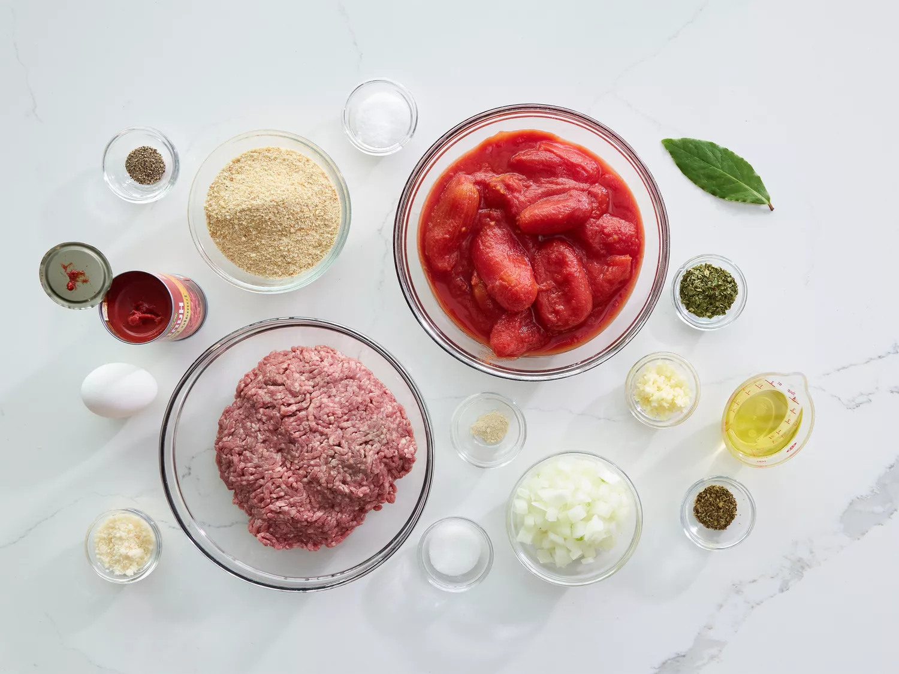
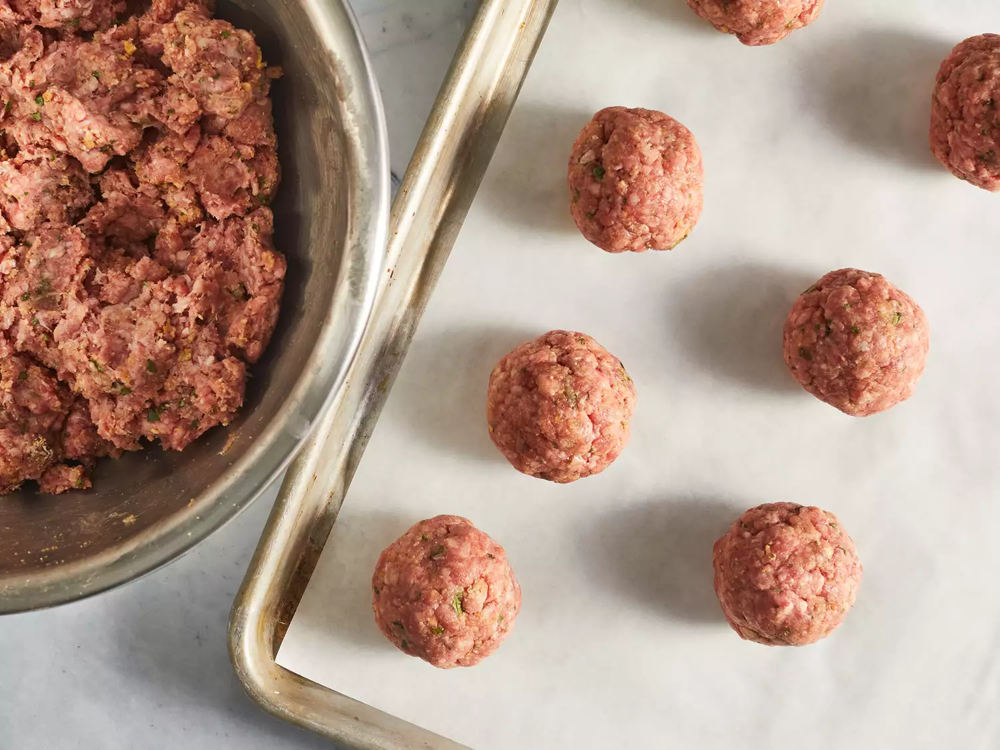
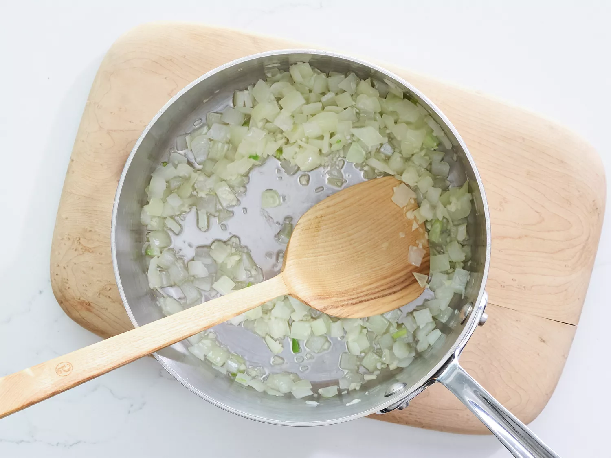
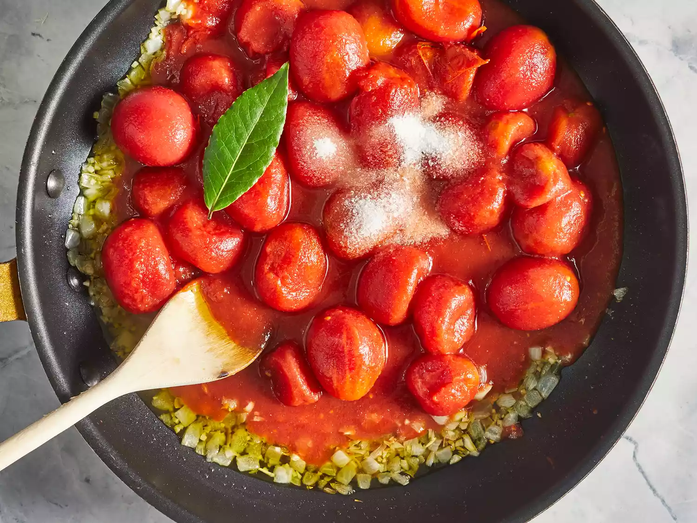
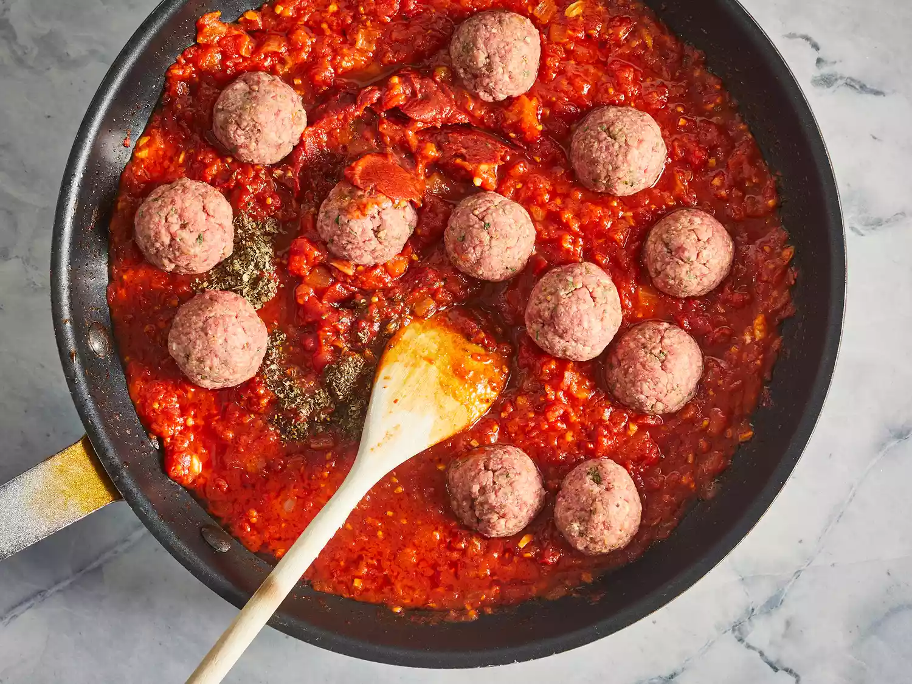

This is an Italian-style pasta sauce with homemade meatballs that's cooked slowly over low heat for an intense tomato flavor. It's easy to make the spaghetti sauce ahead of time; gently reheat and add meatballs 30 minutes before you're ready to serve with your favorite pasta.
Gather all ingredients.
In a large bowl, combine ground beef, bread crumbs, parsley, Parmesan, 1/4 teaspoon black pepper, garlic powder and beaten egg. Mix well and form into 12 balls. Store, covered, in refrigerator until needed.
In a large saucepan over medium heat, saute onion and garlic in olive oil until onion is translucent.
Stir in tomatoes, salt, sugar and bay leaf. Cover, reduce heat to low, and simmer 90 minutes.
Stir in tomato paste, basil, 1/2 teaspoon pepper and meatballs and simmer 30 minutes more.
Serve hot and enjoy!